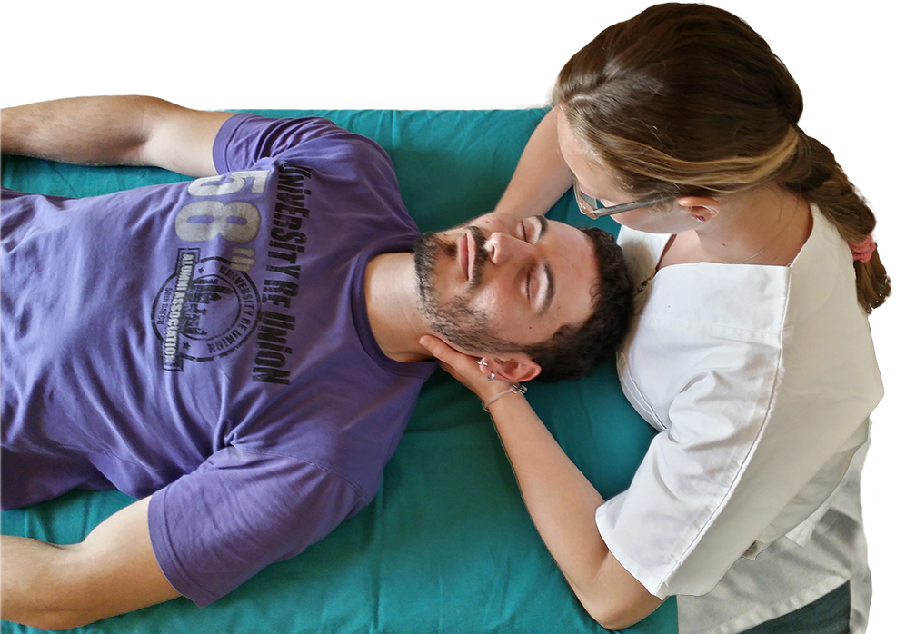

Centro Fisioterapico
San Pietro
Fisioterapia - Kinesiterapia
Dal 1984
Il centro di fisioterapia e kinesiterapia "San Pietro" offre un ambiente familiare e al contempo professionale per lo svolgimento di attività di recupero fisico/motorio.
Da più di 30 anni costituisce un punto di riferimento per la salute di pazienti nelle zone di Cerveteri, Ladispoli e limitrofe.

Terapie
Correnti Interferenziali
Elettrostimolazione
Fisioterapia Sportiva
Ginnastica Posturale Individuale
Ionofresi
Ipertermia
Laserterapia
Linfodreanggio
Magnetoterapia
Massoterapia
Pressoterapia
Radarterapia
Readucazione Vestibolare
Rieducazione dell'Articolazione Temporo-mandibolare
Taping Neuro Muscolare (Kinesio)
Tecarterapia (Diatermia da contatto)
Ultrasuonoterapia
...e molte altre, contattaci!
Orari e Contatti
Lunedì - Mercoledì - Venerdì
10.00 - 13.00
16.30 - 20.30
Martedì - Giovedì
16.30 - 20.30
Tel. 06 995 25 83
Fax 06 995 04 28
info@fisioterapiaspietro.it
P.IVA 11912601009 | Via Piave 35, Cerveteri (RM)
Website By